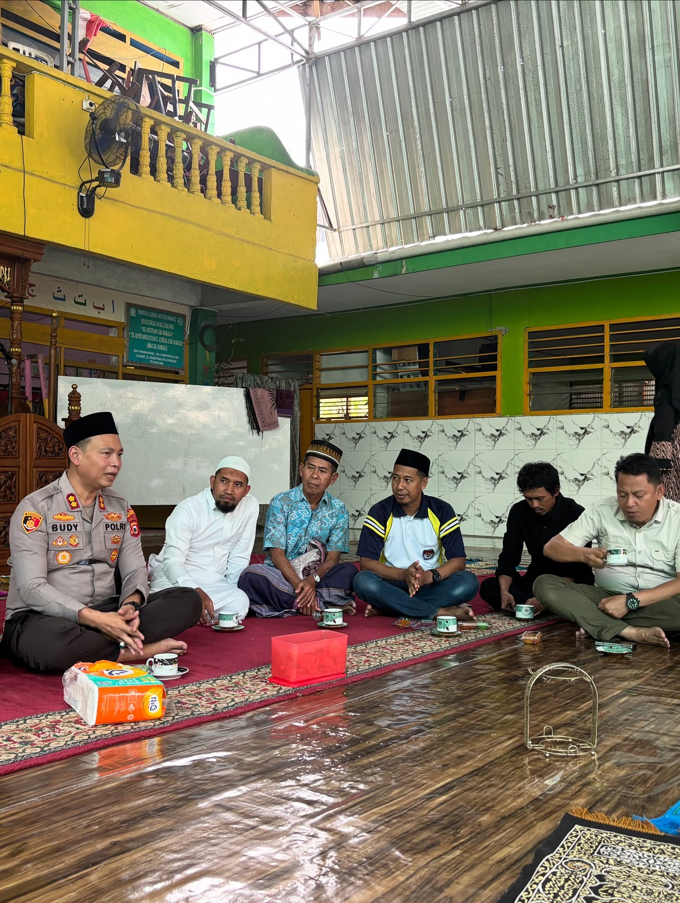
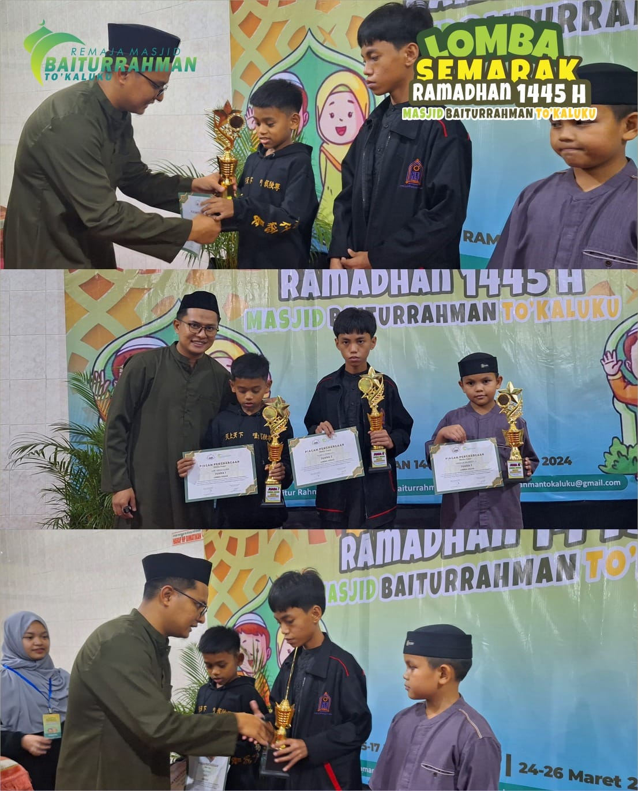

📷 Galeri Foto Kegiatan
Dokumentasi momen, silaturahmi, dan syiar ibadah Masjid Baiturrahman To' Kaluku

Pengajian Majelis Taklim
Kegiatan rutin memperdalam ilmu agama bersama tokoh masyarakat.

Silaturrahmi Kapolres Tana Toraja, AKBP Budi Hermawan, S.I.K.
Alhamdulillah, Masjid Baiturrahman To' Kaluku mendapat kunjungan hangat dari Kapolres Tana Toraja, AKBP Budi Hermawan, S.I.K. Kehadiran beliau bersama jajaran menjadi momentum penting untuk mempererat silaturahmi antara kepolisian dan warga jemaah.

Semarak Ramadhan
Alhamdulillah, rangkaian Lomba Semarak Ramadhan telah berjalan dengan lancar dan penuh khidmat. Kegiatan ini menjadi wadah bagi generasi muda untuk mengasah potensi, memperdalam ilmu agama, sekaligus mengalirkan keberkahan di bulan suci ini..